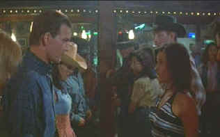

| Letters
from a Killer(SE)/C-,B |
|
Sterling/1998103m/ANA
1.78/ |
Somebody
must have thought they had a good idea here. Convicted wife
murderer Race Darnell becomes a best selling death row author.
(We never do find out what the book's about. Maybe they should
have made a movie from that material.) During the seven year
internment, he continues the legal battle for freedom from the
crime he didn't commit. His best seller attracts many letters
from lonely and sympathetic women. The Letters from a Killer
in this case on delivered on tape as Darnell strikes up a
passionate tape correspondence with a quartet of the ladies.
Each of the women thinks she is the only one. In prison, there's
the sympathetic guard and the nasty guard and the stupid guard,
but prison isn't the focus here. Before long, in an embarrassing
scene, Darnell's attorney tells him a new witness has surfaced
and Race soon has a new trial and freedom.
 |
| Don't
expect to find any dirty dancing here. ©Sterling |
Freedom
isn't all is peaches and cream. One of the women is out for
revenge because she has discovered Race has been unfaithful. The
suggestion here is that women who correspond with men on death
row must be nuts themselves. Race does all the wrong things,
never goes to the police for help and as the plot thickens with
sickening predictability, Race is on the run from the unknown
woman and the police.
The script is constructed with little
logic or polish. Characters are paper thin. The situations ring
false at every turn and chases are plain silly. The murder
set-ups are unconvincing. You do the math.
Patrick Swayzee
plays Race Darnell in a somnambulistic stupor. He must have been
thinking "what did I do to deserve this flick?"
Hopefully, he got a good pay day. And Swayzee's performance may
actually be the best in this dull-witted thriller.
Packaged as a special edition
from Sterling, the DVD includes audio commentary from director
David Carson. There are video interviews with the director,
producer and cast members that do little more than explain the
characters and situations. There's also a video montage,
theatrical trailer, a trivia game and nine additional
trailers (That's right, nine) from the Sterling catalog.
The transfer is pretty decent. It
doesn't have much snap, but it's reasonably sharp. Colors are
fine. I am not sure if the dull material numbed my visual
sensibilities, but the DVD seemed thoroughly unexceptional. The
Dolby Digital 5:1 sound, with a score that pounds emphatically
at every portent moment, is very good. There's a fair amount of
information encoded to the surrounds, and the dialogue is
painfully clear. The best thing I can say about this movie
is that I watched it through and did not fall asleep. I'm glad I
didn't have wine with dinner. On second thought, maybe I should
have had a whole bottle.
|
|

The
Movie Poster Archive include extensive poster images from the
films of stars like Susan Hayward, Kirk Douglas, Katharine
Hepburn and many more. This month's featured star is Edward
G. Robinson

 Black
DVD Online is a new site
dedicated to black film content on DVD. The commendable enterprise
is hosted by Webmaster Samuel L. McLemore, Jr. and presented in an
attractive interface. Black
DVD Online is a new site
dedicated to black film content on DVD. The commendable enterprise
is hosted by Webmaster Samuel L. McLemore, Jr. and presented in an
attractive interface.
 A
love of movies drives this small DVD production company, Synapse
Films. Currently
specializing in horror and cult films. Watch for new DVD releases of
film festival independents as Synapse branches out.. A
love of movies drives this small DVD production company, Synapse
Films. Currently
specializing in horror and cult films. Watch for new DVD releases of
film festival independents as Synapse branches out..
 Sight
and Sound Magazine is the venerable voice of The British Film
Institute. The site includes articles and film reviews. A great
resource in print and on the Internet. Sight
and Sound Magazine is the venerable voice of The British Film
Institute. The site includes articles and film reviews. A great
resource in print and on the Internet.
Choko
Movie Posters
The popular Paris movie poster store makes
it's way to the Internet with an outstanding selection of French Movie Posters. Many
beautiful images on display in a searchable data base.
 Direct
from the corridors of the Home
Theater Forum, Home Theater Talk is
the newest place on the Net to
discuss everything home theater.
Friendly atmosphere and
knowledgeable folks are the secret
ingredients. Direct
from the corridors of the Home
Theater Forum, Home Theater Talk is
the newest place on the Net to
discuss everything home theater.
Friendly atmosphere and
knowledgeable folks are the secret
ingredients.
 Nicebid.com
is a well organized auction site. Movie fans can browse
through the movie section for posters and star photos. Nicebid.com
is a well organized auction site. Movie fans can browse
through the movie section for posters and star photos.
|